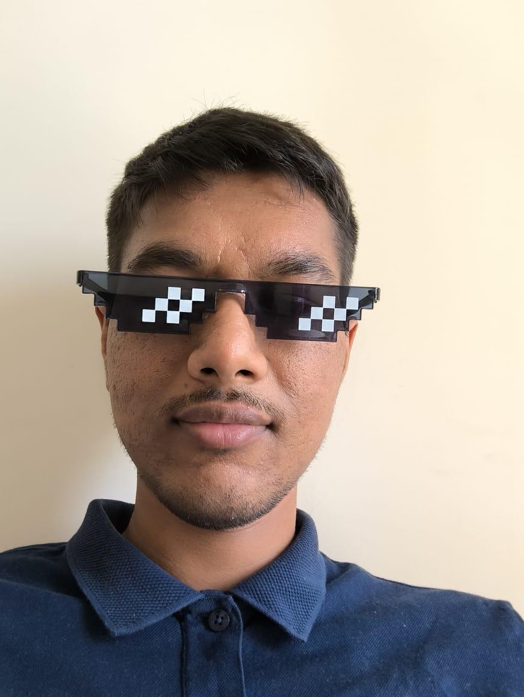

Anish Natekar
Backend + AI Engineer — GreenSage AI
I build the backend, app, and AI workflows behind GreenSage AI's Energy Audit product — cloud infrastructure, application logic, and LLM-based automation end to end. Previously I was a Research Engineer at TCS Research, building multi-agent LLM systems and hybrid RAG pipelines. Outside work I design and build drones and robotics from the PCB up.

About
I'm a Backend + AI Engineer at GreenSage AI, building their Energy Audit AI product across the stack — cloud backend, application layer, and LLM-based AI workflows. Before this I was a Research Engineer in the Generative AI group at TCS Research (TRDDC), Pune, where I architected multi-agent LLM systems for multimedia analysis and hybrid RAG pipelines combining vector search, MCP-based tool calling, and evaluation feedback loops. I did my B.Tech in Computer Science at IIT Goa, and before that spent time at Siemens EDA working on compiler internals for the Questa HDL simulator.
Experience
- Building GreenSage AI's Energy Audit AI product across the stack — cloud backend, application layer, and LLM-based AI workflows.
- Architected multi-agent LLM systems for multimedia analysis using DSPy-based structured reasoning pipelines.
- Designed hybrid RAG systems integrating vector search, MCP-based tool calling, and evaluation feedback loops.
- Built automated prompt optimization and benchmarking frameworks to improve reasoning reliability.
- Conducted LoRA/QLoRA fine-tuning experiments on domain-specific datasets.
- Contributed to the compiler optimization stage (vopt) in the Questa HDL simulator.
- Enhanced X-value propagation logic and built regression tests in a large-scale C codebase.
- Worked in a Linux (CentOS) environment using Perforce Helix.
- TA'd a 2-week industrial training course on discrete-event simulation (SimPy) under Prof. Neha Karanjkar — wrote assignments, verified solutions, and graded submissions for enrolled company employees.
- Completed a High-Performance Computing & AI research internship at the NSM India Nodal Center for Training in HPC & AI.
- CGPA 8.35/10. Coursework: Machine Learning, Artificial Intelligence, Deep Learning, Operating Systems, Computer Networks.
Publications
ICLR's workshop on memory for LLM-based agentic systems. Proposes a retrospective–prospective memory architecture that turns multi-trajectory agent feedback into textual gradients, improving multi-agent software-development performance without fine-tuning.
ICLR's workshop on Human Cognition to AI Reasoning. Extends Inverse Constitutional AI with structured multi-persona debate to extract richer, more interpretable alignment principles from human preference data.
Springer CCIS proceedings. Introduces a hybrid pooling efficient-channel-attention block on YOLOv8 for small-object detection, plus the MTAD dataset, validated on real UAV flights and SITL simulation.
IEEE-sponsored conference under India's MeitY SwaYaan UAS program, IISc Bangalore. Contributes WildYOLO, a YOLO + efficient-channel-attention model for wildlife detection, evaluated on WAID (mAP@50: 94.2%) and deployed on a Pixhawk-integrated UAV.
The flagship INFORMS/IEEE simulation conference. Modernizes the Sitar parallel discrete-event simulation framework and benchmarks it against SystemC and SimPy.
Projects
Gallery Search
Fully offline AI-powered photo gallery app — text, image, and face search with semantic and face-similarity clustering, backed by custom on-device embedding and vector indexing.
View on GitHub →PicoW Copter
Open-source, sub-100g WiFi-controlled quadcopter — full-stack build with custom PCB, firmware, and a Flutter control app, flown over UDP on a Raspberry Pi Pico W.
View on GitHub → · Docs →MetaOS
An open-source agent inspired by natural-language and operating-system concepts — exploring how classic OS abstractions map onto agentic LLM systems.
View on GitHub → · Site →RC Plane, Scratch-Built in India
A documented build of an affordable, scratch-built radio-controlled plane in India — design decisions, materials, and flight testing.
Read the build log →Videos
From my college years building and flying drones and RC planes — build logs, flight tests, and simulation work from my YouTube channel (197 subscribers).


Skills
AI Systems & LLM Engineering
ML Frameworks & Tooling
Programming & Infrastructure
Positions & Achievements
- Head, E&R Robotics Club, IIT Goa — built line-follower robots, RC planes, and sub-100g swarm drones. 2022 – 2023
- Student Representative — represented the Batch of 2020 to the IIT Goa Undergraduate Committee. 2020 – 2024
- JEE Advanced AIR 3858; JEE Mains 99.2 percentile. 2020
- 1st Place, IIT Goa Coding Contest (Game of Codes); 3rd Place, IIT Goa IIC Virtual Lab Hackathon. 2023, 2021
Contact
Best way to reach me is email — happy to talk research, robotics builds, or freelance work.